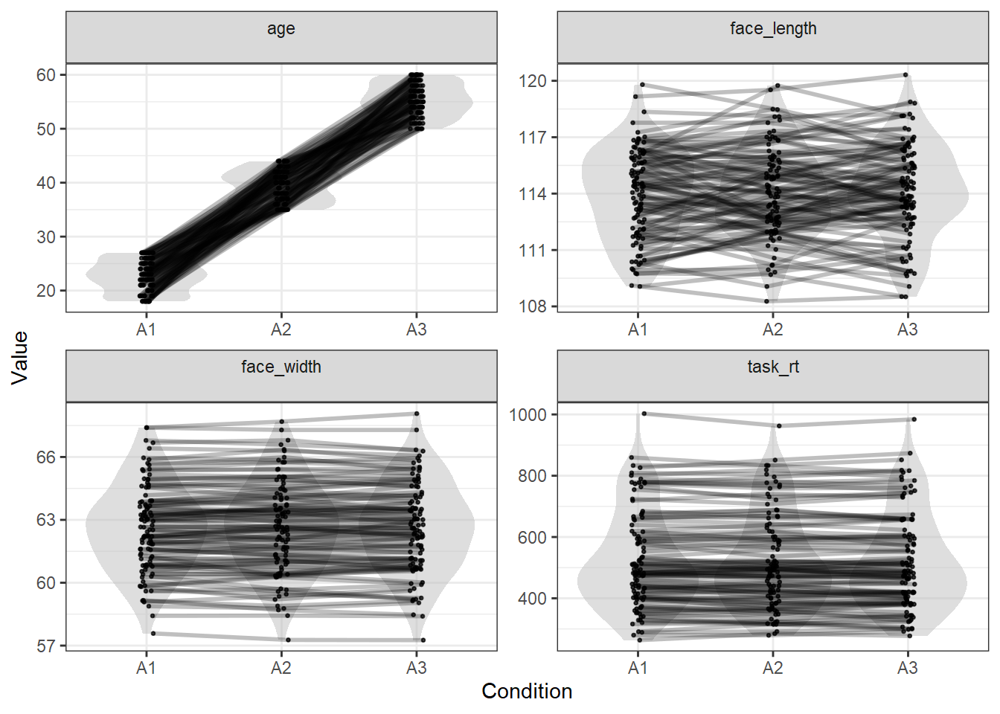

In this example I’ll show how you can add more levels to an independent variable.
library(tidyverse)
library(LexOPS) # package with functions for item-wise matchingstim_pool <- read_csv("stim_pool.csv")This time, we use the same design as in 02 - Multiple Control Variables, but with an extra middle-aged condition. In total, we’ll have three conditions:
We can add new age conditions with the ~ symbol:
stim <- stim_pool %>%
set_options(id_col = "stim_id") %>%
# create the three levels of age
split_by(age, 1:28 ~ 35:45 ~ 50:100) %>%
# control for all variables
control_for(face_width, -0.5:0.5) %>%
control_for(face_length, -2:2) %>%
control_for(task_rt, -25:25) %>%
control_for(gender) %>%
generate(n=100, seed=42)## Generated 5/100 (5%). 9 total iterations, 0.56 success rate.
Generated 10/100 (10%). 15 total iterations, 0.67 success rate.
Generated 15/100 (15%). 21 total iterations, 0.71 success rate.
Generated 20/100 (20%). 26 total iterations, 0.77 success rate.
Generated 25/100 (25%). 36 total iterations, 0.69 success rate.
Generated 30/100 (30%). 44 total iterations, 0.68 success rate.
Generated 35/100 (35%). 51 total iterations, 0.69 success rate.
Generated 40/100 (40%). 68 total iterations, 0.59 success rate.
Generated 45/100 (45%). 74 total iterations, 0.61 success rate.
Generated 50/100 (50%). 83 total iterations, 0.60 success rate.
Generated 55/100 (55%). 92 total iterations, 0.60 success rate.
Generated 60/100 (60%). 98 total iterations, 0.61 success rate.
Generated 65/100 (65%). 105 total iterations, 0.62 success rate.
Generated 70/100 (70%). 116 total iterations, 0.60 success rate.
Generated 75/100 (75%). 122 total iterations, 0.61 success rate.
Generated 80/100 (80%). 133 total iterations, 0.60 success rate.
Generated 85/100 (85%). 143 total iterations, 0.59 success rate.
Generated 90/100 (90%). 149 total iterations, 0.60 success rate.
Generated 95/100 (95%). 159 total iterations, 0.60 success rate.
Generated 100/100 (100%). 169 total iterations, 0.59 success rate.This gives us a list of matched triplets of young, middle-aged, and old faces. Each row has a young face A1, a middle-aged face A2, and an old face A3. There is also a match_null column (see 04 - Setting the Match Null for an explanation of match nulls).
stim## # A tibble: 100 x 5
## item_nr A1 A2 A3 match_null
## <int> <chr> <chr> <chr> <chr>
## 1 1 face_4884 face_1865 face_2334 A1
## 2 2 face_3851 face_740 face_3854 A3
## 3 3 face_3301 face_160 face_4826 A2
## 4 4 face_2181 face_1713 face_2558 A1
## 5 5 face_3282 face_3330 face_1218 A3
## 6 6 face_341 face_3098 face_4026 A2
## 7 7 face_121 face_3052 face_3084 A3
## 8 8 face_1817 face_720 face_3491 A3
## 9 9 face_1243 face_4788 face_1334 A1
## 10 10 face_4854 face_3816 face_2268 A3
## # ... with 90 more rowsWe can check the values for each item with long_format():
long_format(stim)## # A tibble: 300 x 9
## item_nr condition match_null stim_id gender age task_rt face_width face_length
## <int> <chr> <chr> <chr> <chr> <dbl> <dbl> <dbl> <dbl>
## 1 1 A1 A1 face_4884 m 19 801. 63.6 115.
## 2 1 A2 A1 face_1865 m 42 819. 64.1 115.
## 3 1 A3 A1 face_2334 m 55 796. 63.4 114.
## 4 2 A1 A3 face_3851 f 19 860. 59.8 116.
## 5 2 A2 A3 face_740 f 41 834. 59.2 115.
## 6 2 A3 A3 face_3854 f 59 852. 59.6 115.
## 7 3 A1 A2 face_3301 f 22 809. 63.8 109.
## 8 3 A2 A2 face_160 f 36 805. 63.7 108.
## 9 3 A3 A2 face_4826 f 59 818. 63.8 109.
## 10 4 A1 A1 face_2181 m 24 779. 61.6 116.
## # ... with 290 more rowsWe can look at the quality of the matching of the numeric values with plot_design():
plot_design(stim)
This shows the expected result, with the control variables matched item-wise across the three conditions.